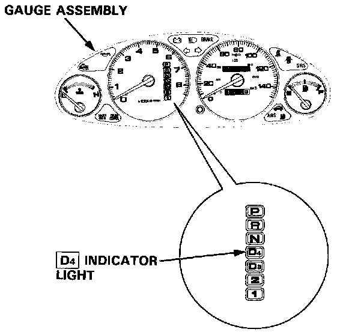
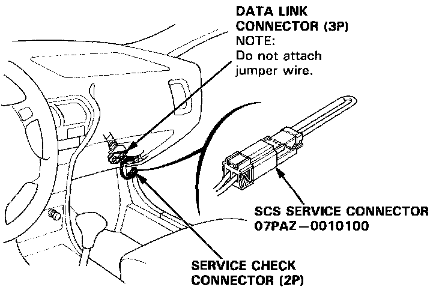
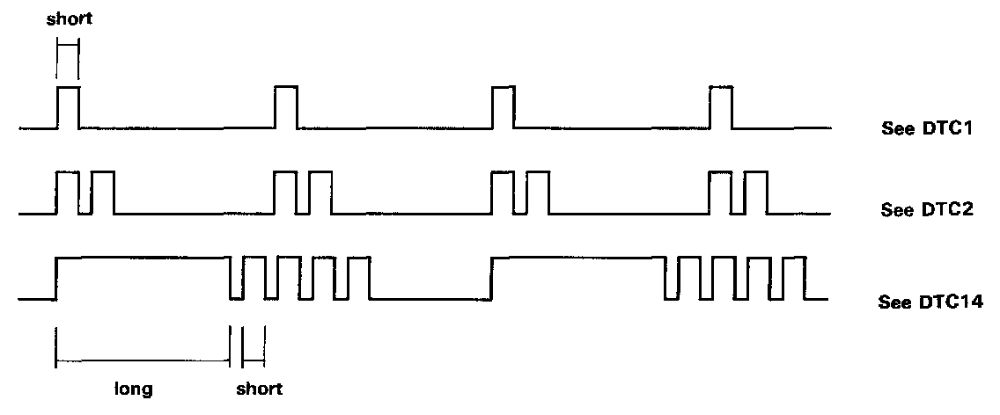
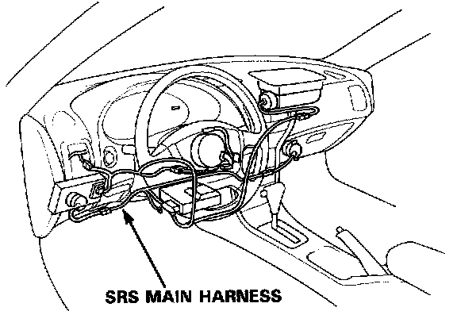
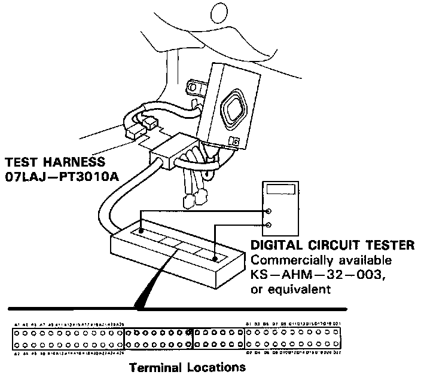

Without Scan Tool

When the TCM senses an abnormality in the input or output systems, the D4 indicator light in the gauge assembly will blink.
When the Service Check Connector (located under the dash on the passenger side) is connected with the special tool as shown, the D4 indicator light will blink the Diagnostic Trouble Code (DTC) when the ignition switch is turned on.

When the [D4] indicator light has been reported on, connect the Service Check Connector with the special tool. Then turn on the ignition switch and observe the [D4] indicator light.

Codes 1 through 9 are indicated by individual short blinks, codes 10 through 15 are indicated by a series of long and short blinks. One long blink equals 10 short blinks. Add the long and short blinks together to determine the code. After determining the code, refer to the electrical system Symptom-to-Component Chart on pages 14-50 and 51.
Some PGM-FI problems will also make the [D4] indicator light come on. After repairing the PGM-FI system, disconnect the BACK UP fuse (7.5 A) in the under-hood fuse/relay box for more than 10 seconds to reset the TCM memory.
NOTE: Disconnecting the BACK UP fuse also cancels the radio anti-theft code, preset stations and the clock setting. Get the customer's code number, and make note of the radio presets before removing the fuse so you can reset them.
CAUTION:

- All SRS electrical wiring harnesses are covered with yellow insulation.
- Before disconnecting any part of the SRS wire harness, connect the short connectors.
- Replace the entire affected SRS harness assembly if it has an open circuit or damaged wiring.

If the inspection for a particular failure code requires the use of Test Harness (07LAJ-PT3010A):
1. Remove the left side kick panel on the driver's side.
2. Connect the wire harness to the Test Harness, and/or connect the Test Harness to the TCM according to the troubleshooting flowchart.
NOTE:
- Only the A and D terminals of the Test Harness are used for A/T troubleshooting.
- Unless otherwise noted, use only the Digital Circuit Tester, commercially available or KS- AHM-32-003, for testing.